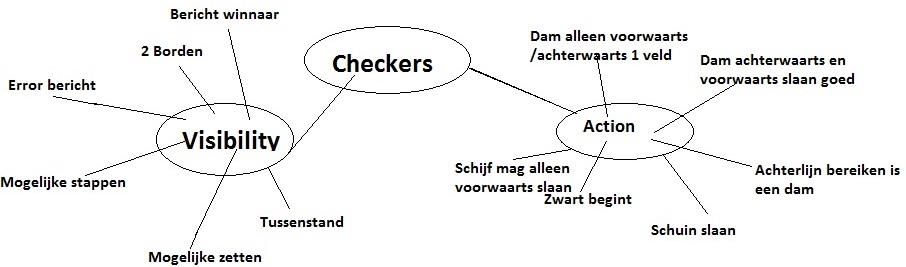

MIT2: Visibility
Het spel checkers is een variant op het bekende spel dammen. Checkers lijkt erg op dammen, maar er zijn enkele andere regels en het bord is anders. Hieronder is een uitleg te vinden over het spel checkers en een voorbeeld van een state van het spel.
